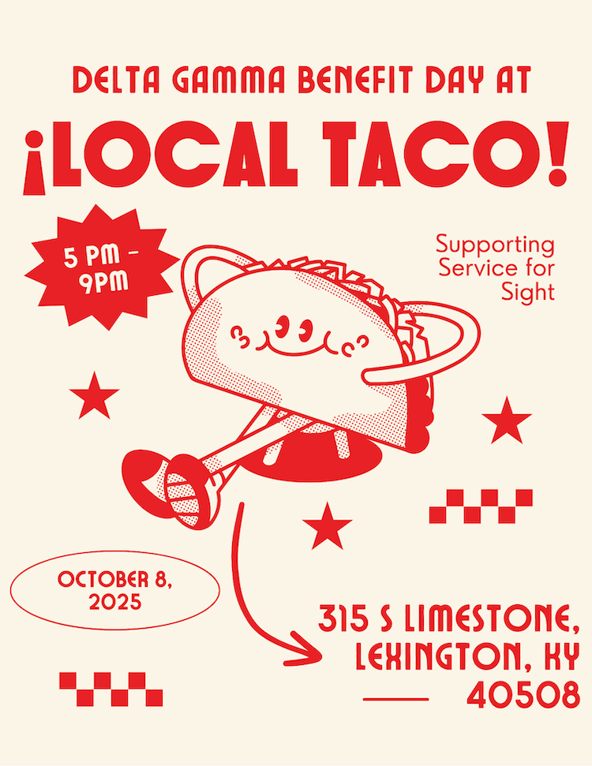
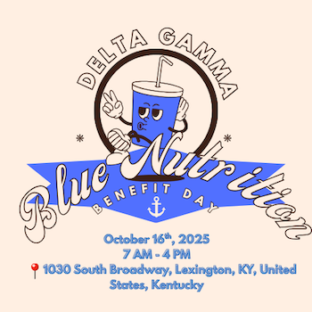

Jump to Why Infographics Matter to Me
Local Taco Fundraiser
Fundraiser Local Taco
This larger infographic was created for a fundraiser in partnership with Local Taco. It focuses on clear event details and highlights how supporting the fundraiser benefits the cause.

Blue Nutrition Fundraiser
Fundraiser Blue Nutrition
This infographic is one I created for a Delta Gamma benefit day with Blue Nutrition to help promote the event.

Some Other Things I Have Designed
Below are links to other graphics and materials I have created for fundraising and campus involvement:
How I Want to Use This With My Career
Creating infographics allows me to combine creativity with communication, which is a skill I want to highlight in my future career. These designs show my ability to present information clearly, think visually, and tailor content to an audience.
I plan to use examples like these to demonstrate to employers that I can contribute creatively while still meeting professional and technical expectations in digital and media-focused roles.
Why Infographics Matter to Me
I like infographics because they combine design, organization, and communication into one thing. A good infographic does more than just look nice; it also helps the reader understand the information in a way that makes sense and is easy to follow.
I think about organization and clarity when I make infographics, including what someone should notice first and what can be made easier. This is similar to how semantic HTML works, where headings and sections help people understand content even before it is styled.
Making infographics has also taught me how important it is to be aware of your audience and make things easy to understand because not everyone is going to look at it the same way. The design has failed if the information is hard to understand or too much to take in. That lesson has a direct impact on how I write and organize the content on this site.